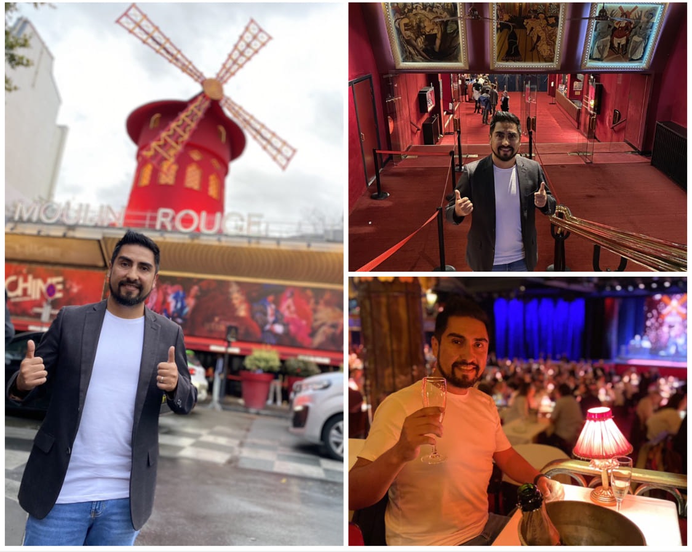
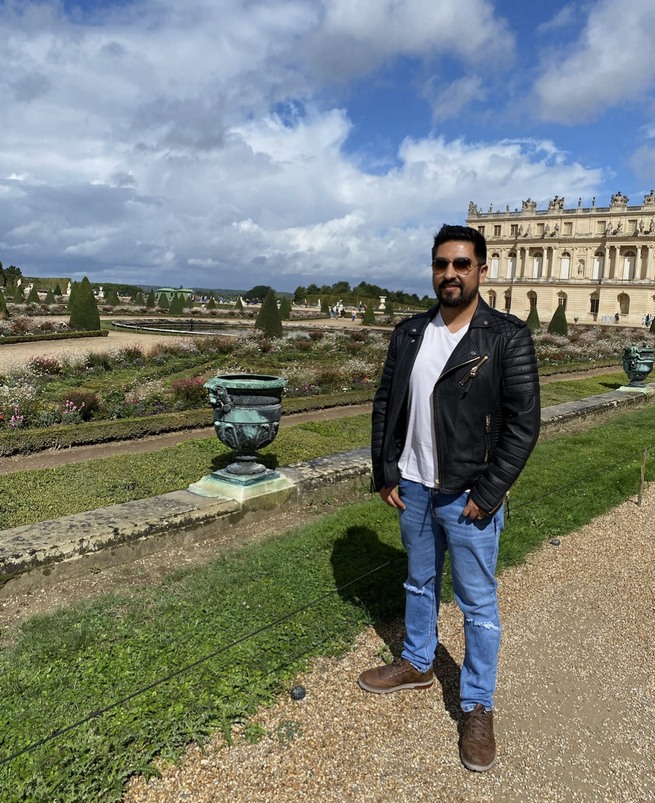

Lugares Especiales de Paris en 3 Días.
Bonjour!!
¿Vas a visitar París en 3 días? ¡Este es tu post! Te dejo un itinerario bien especial con todas las cosas imprescindibles que ver en 3 días.
Con mapas de cada día para que te sitúes mejor y no te dejes nada por ver en la ciudad del amour!
París es una ciudad que no me canso de visitar, desde la primera vez que la pisé fué un amor a primera vista y las siguientes veces no hicieron más que corroborarmelo, ¡París es una ciudad que enamora! Romántica como no hay otra ♥
En este post te comento las visitas imprescindibles para una primera vez, planning diario, consejos, recomendaciones...
Vamos, con todo! guía de 3 días en París!
Dia 1: Trocadero, Torre Eiffel, Montmartre y Sacre Cour
PUNTOS DE INTERÉS:
- Trocadero
- Torre Eiffel
- Campos de Marte
- Barco por el Sena
- Arco de triunfo
- Barrio de Montmartre
- Moulin Rouge
- Café des 2 Moulins
- Muro des Je T'aimes
- Basílica de Sacre Cour
- Torre Eiffel de noche
De inicio te recomiendo madrugar para poder disfrutar de Trocadero sin gente y aprovechar para hacer fotos con trípode (más tarde está prohibido usar trípodes).
A mi me mereció muchísimo la pena el madrugón, fue super bonito ver amanecer desde Trocadero y poderlo disfrutar sin casi gente.
Cruzando los Jardines del Trocadero y el Puente de Jena llegamos hasta los pies de la Torre Eiffel, subir a primera hora nos asegura menos colas y más tranquilidad para visitarla.
Yo en lo particular solo he subido un par de veces, es cierto que el atardecer desde arriba es impresionante pero la cantidad de gente que hay hace que no se disfrute igual.
No te pierdas el suelo de cristal a 57 metros de altura en la primera planta.
Después puedes pasear y relajarte por los bonitos Campos de Marte, si vas en verano hasta puedes hacer un picnic en el césped, en invierno está todo acordonado.
Desde los pies de la Torre Eiffel parten los barcos de paseo por el Sena, podemos aprovechar y tomar uno, tienen una hora de duración.
El siguiente punto es uno de los más importantes de París, el Arco del Triunfo. Puedes subir al mirador por 12€.
El barrio de Montmartre es el más bohemio de la ciudad y nuestro preferido. Podemos recorrerlo por nuestra cuenta o en un free tour donde nos explicarán todo mucho mejor.
No puede faltar la foto de rigor en el Moulin Rouge y si quedas con gusto a poco puedes ver algún espectáculo, eso sí tendrás que comprar los tickets al menos con 3 meses de antelación.
Muy cerca está el Café des 2 Moulins, famoso por aparecer en la película de Amelie.
En el barrio de Montmartre también se encuentra el muro des Je T'aimes con las palabrasTe Quiero" que estan escritas en cientos de idiomas.
¡Seguro que te resulta imposible resistirte a un crep! El agradable olor inunda todo el barrio.
Si estas de animo puedes subir la escalinata hasta el Sacre Cour y si el cansancio está empezando a aparecer puedes subir en el funicular.
Desde la escalinata del Sacre Cour tendrás una de las mejores vistas de París ¡y gratis!
Aunque el atardecer no es el más bonito (a mí parecer), es uno de los lugares más populares para reunirse a esta hora.
Suele haber músicos tocando y se crea un ambiente muy acogedor y ameno. Te recomiendo relajarte y disfrutar de ese momento en París, seguro que no te decepcionas.
Eso sí! Cuidado con los carteristas como en todo lugar turístico de cualquier ciudad hay quien se intenta aprovechar de los viajeros despistados y embelesados con las vistas de París.
Es popular cenar en la Plaza de Tertre rodeados de todo tipo de artistas.
Si todavía te quedan fuerzas, cosa que no dudo 😉 puedes volver a Trocadero para ver la Torre Eiffel iluminada de noche, ¡espectacular!
Reservas para el día de hoy:
- Entrada para la Torre Eiffel. Reservar aquí.
- Paseo en barco por el Sena. Reservar aquí.
- Free tour por el barrio de Montmartre. Reservar aquí.
TIPS DEL DÍA:
• Madrugar para tener Trocadero sin nada de gente y tomar excelentes fotos.
Dia 2: Museo del Louvre, El Panteon, Notre Dame, Opera Garnier
PUNTOS DE INTERÉS:
- Museo del Louvre
- El Panteón
- Notre Dame
- Tour por la ciudad
- Jardines del Palacio Real
- Iglesia de la Madeleine
- Ópera Garnier
- Galeries Lafayette
- Le Bouillon Chartier (restaurante)
Te recomiendo llevar la entrada comprada desde casa para el museo del Louvre y así ahorrarás la cola de comprarla allí.
Es el museo más importante de París, de Francia y uno de los más importantes del mundo. Puedes hacerte una idea de la cantidad de personas que lo visitan cada día, por eso ir a primera hora es una muy buena opción!
Por supuesto, ¡ver a la Mona Lisa es un imprescindible!
La visita te puede llevar todo el día si quieres, ¡es enorme! Pero para poder aprovechar al máximo los 3 días en París Te recomiendo apurar un poco el tiempo.
Muy cerca están los Jardines del Palacio Real, si vas bien de tiempo Puedes acercarte pero no son imprescindibles.
El imponente Panteón sí que es un punto importante que ver en París, y que Te recomiendo visitar.
No podíamos dejar de incluir Notre Dame en este planning de París en 3 días, aunque no sabemos cuando se podrá volver a visitar por dentro después del terrible incendio. Eso sí, ¡por fuera es una visita obligada!

Siempre Te recomiendo hacer un tour para conocer mejor las ciudades y en París no iba a ser menos, nos ayudará a conocer mejor la historia de la ciudad y sus curiosidades. Puedes reservar aquí un free tour.
Justo este tour que te recomiendo comienza en Plaza de Saint Michel al lado de Notre Dame y termina en el museo del Louvre, después de ver el puente nuevo, el puente de las Artes y los Jardines de Tullerías.
La iglesia de la Madeleine a mi me llamó mucho la atención por su arquitectura, más típica de Roma que de París.
A un paso de allí está la Ópera Garnier, también conocida como la Ópera de París que bien merece su espacio en nuestra ruta por París en 3 días. Si quieres también Puedes hacer un tour privado donde te enterarás de todas las curiosidades de este histórico lugar.
Las Galeries Lafayette se encuentran justo detrás y es otro de los lugares imprescindibles que ver en París.
Estas galerías llevan abiertas desde 1912 y seguro que no te dejarán indiferente, toda la decoración interior, las vistas gratuitas desde la terraza a toda París, la plataforma de cristal elevada y la cúpula, ¡no te lo pierdas!
Te recomiendo ir a cenar a Le Bouillon Chartier, cocina típica francesa genial de precio y buenísima! Además está cerca de las Galeries Lafayette. ¡Si vas, acuerdate pasar por aquí a contarme que tal! 🙂
Reservas para el día de hoy:
- Entradas para el Museo del Louvre. Reservar entrada sin colas
- Algún tour guiado por la ciudad. Reservar free tour o si lo prefieres un tour privado por la ciudad con guía en español.
- Ópera Garnier. Reservar tour
Tips del día:
•Si el horario acompaña, no te pierdas el atardecer desde la terraza de las Galeries Lafayette.
Dia 3: Plaza de la Concordia, Los Invalidos, Torre Montparnasse y Palacio de Versalles
PUNTOS DE INTERÉS:
- Museo d'Orsay
- Plaza de la Concordia
- Grand Palais
- Puente de Alejandro III
- Los Inválidos
- Atardecer en la Torre Montparnasse
- Ir a cenar al Barrio Latino
Te recomiendo desayunar en Holybelly 5, una cafetería super buena en la que desayuné realmente bien en mi viaje a París. Eso sí, intenta ir nada más al abrir porque después se forman grandes colas!
La primera visita del día en uno de los museos más bonitos de París y una de las sorpresas de mi última visita a la ciudad, el Museo d'Orsay.
Se encuentra en una antigua estación de tren y el propio edificio ya me habia parecido increíble por youtube, se pueden ver algunas obras de Van Gogh o Manet entre otros artistas.
Más info del museo d'Orsay en su web.
Otro de los lugares que no pueden faltar en el planning de París en 3 días es la Plaza de la Concordia, dónde se encuentra el gran obelisco de Lúxor de más de 3000 años de antigüedad, regalo de Egipto a París en 1836.
El Grand Palais es otro impresionante edificio parisino, cuenta con una impresionante cristalera en el techo y en Navidad montan una pista de patinaje en su interior, la entrada es gratuita pero tiene algunas exposiciones para las que sí que hay que pagar, te recomiendo mucho su visita.
Por la tarde puedes visitar uno de los puentes más bonitos de Europa el Puente de Alejandro III y por supuesto cruzarlo, sí o sí!
Cruzando la explanada de los Inválidos podrás llegar hasta el imponente edificio de Los Inválidos donde se encuentra la tumba de Napoleón, un edificio histórico y significativo de la ciudad de París.
Para ver el atardecer y despedirnos de nuestro último día en la ciudad, Te recomiendo subir hasta el mirador de la Torre Montparnasse, yo pude disfrutar del atardecer más bonito de París junto a un buen vino.
Puedes reservar la entrada sin colas.
Nuestro penultimo esencial de Paris es la visita al Palacio de Versalles ,Puedes reservar aquí una excursión, se encuentra en las afueras de Paris y puedes llegar en transporte publico (con la linea 6 del metro) o tomando un tren de la linea c RER a la estación Versailles Rive Gauche, unos de los mejores tips es comenzar por el costado izquierdo del palacio ya que es muy extenso el Castillo y cada habitacion esta numerada para que lo visites de forma ordenada. El palacio está abierto todos los días excepto los lunes y el 1 de mayo.
El horario es de 9h a 18:30h. Para ser de los primeros visitantes y ahorrarte tiempo de espera, te recomendamos llegar sobre las 8:30h y ponerte en la cola. Durante el resto del día, las colas de acceso son bastante largas.
Si solo deseas visitar los jardines el acceso es gratuito para todo el mundo de noviembre a marzo, De abril a octubre encienden las fuentes de los jardines y ambientan el espacio con música, creando el maravilloso espectáculo de Grandes Aguas y Jardines Musicales. Se hace todos los días excepto los miércoles (cuando sigue habiendo acceso gratis a los jardines). Los días de espectáculo, si solo quieres visitar los jardines, todos los mayores de 5 años tienen que pagar entrada (9,50€ tarifa general / 8€ tarifa reducida)
Y ya para finalizar el viaje de París en 3 días que mejor que ir a cenar y disfrutar de uno de los barrios con más ambiente de la ciudad, el barrio latino. Encontrarás muchísimas ofertas de restaurantes y lugares donde puedes tomar algo, recomendado vino Bordeaux Grand Cru.
Reservas para el día de hoy:
- Entrada al Museo d'Orsay. Reserva aquí.
- Entrada Torre Montparnasse. Reservar aquí.
Dónde comer en 3 días en Paris
Te dejo un listado con los restaurantes y cafeterías que más gustan de Paris, también algunos que me habían recomendado.
Cafeterías para desayunar
- La Bossue & Zia, desayunos y creps.
- Holybelly5
- Jozi Cafe o Aux Cerises, ideales para desayunar comida tipica parisina con un Latte o un Black Coffee.
Restaurantes Geniales:
- Le Bouillon Chartier, es espectacular almorzar una sopa de cebolla y un plato de fondo con Boeuf Bourguignon.
- Foyer de la Madeleine, una exquisita carta variada del mar y en carnes.
- Nicos, Por 10€ tienes la posibilidad de comer entrada, plato principal y postre, lo cual es un excelente precio para una comida completa en París.
Mapa de todas las cosas que ver en Paris en 3 días
Mapa con todas las cosas que ver y hacer en 3 días en Paris, restaurantes recomendados y alojamientos donde pasar unos días inolvidables.
¡Y hasta aquí nuestra planning de cosas que ver en París en 3 días!
¡Es una de las ciudades más visitadas del mundo y por algo será! Si dispones de más de 3 días no será ningún problema, seguro que encontrarás alguna idea ahora que ya has visto mi blog para tener un excelente viaje ;)
¿Incluirías algo más en este planning de 3 días en París? Si te ha quedado alguna duda sobre esta ruta, ¡Te espero en los comentarios!


5 Comentarios
A.Dadario
Excelente tu articulo AARON me ayudado un monton!!.
K.Reeves
Me ha gustado el tip del vino, es una buena opción para probar en mi siguiente visita.
O.Wilde
Solo agregaría visitar alguno de los tour por el sena son increibles!!
Dejame Un Comentario